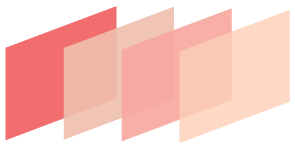

The basic premise of the CSS box-object model is that everything on the web is a rectangle or "box". Each element on the web has a content area, padding, a border, and a margin, in that order (from inside, out).
The Box-Object Model
Objective: Explain the CSS Box-Object Model in a concise, easy-to-understand presentation.
The content area, though it doesn't look like it, is self-contained in a rectangle. Text and images appear here.
The padding clears an area around the content. It is affected by the background color and is not transparent.
The border goes around the content area and padding. You can control the color and width of the border, even applying decorative styles.
The margin clears an area outside of the border, and is always transparent.
In CSS 2.1, if you specified a height and a width for the element, it would only apply to the content area. The margins, padding, and border would be drawn outside of the content area size specified, actually making the element larger.
width + padding + border = actual visible/rendered width of box
height + padding + border = actual visible/rendered height of box
In CSS3, a property has been introduced that has changed the box object model. The box-sizing property allows all of these things--the margin, border, padding, and content area to be drawn inside of the element, rather than outside, giving you more control over size & positioning.
content {
-webkit-box-sizing: border-box;
-moz-box-sizing: border-box;
box-sizing: border-box;
}
And, of course, you would also add your padding, margins and borders, and find that they rest within the specified height and width.
With box-sizing, the default setting is content-box, which preserves the properties of the former CSS 2.1. border-box gives the new styling precedence, and inherit, of course, just inherits whatever's going on in the parent element.